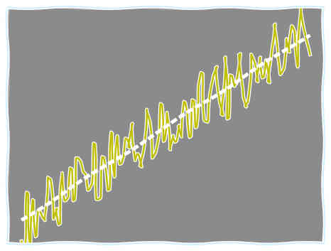

Introdução à Análise de Dados de Processo
Utilizando um Sistema de Gerenciamento de Informações de Processos (PIMS)
Caso prático com o EPM (Elipse Plant Manager, PIMS da Elipse Software)

This work is licensed under a Creative Commons Attribution 4.0 International License.
Alinhando Expectativas
- Introdução à Análise de Dados
- Dados de Processo
- Sistema de Gerenciamento de Informações de Processos ou PIMS
Agenda
- Institucional
- Motivação
- Sistemas de Controle e Automação - Perspectiva do Fluxo de Dados
- Breve Introdução à Análise de Dados
- Ferramentas de Análise do EPM
- O que é a Linguagem Python - Noções de Programação
- Ambiente Integrado de Análise
- Ambiente Integrado de Soluções
- *** PROVA FINAL! ☺ ***
Motivações

Sumarizando em duas palavras:
- Diversão (extra oficial) !
- Lucro (oficial) !
Mão na massa (diversão)!
Análise Exploratória, Preliminar ou Inicial
Verificar o maior número possível de informações que podem ser extraídas de uma análise exploratória inicial das temperaturas das salas da Elipse-RS no mês de junho de 2017.
- ADM_Temperature
- EPMDev_Temperature
- PowerDev_Temperature
- E3Dev_Temperature


Motivação (oficial)
O objetivo primordial de qualquer NEGÓCIO é o LUCRO!!!
Ou seja, espera-se obter um retorno positivo do investimento realizado em um Negócio
Motivação
Quem não quer lucro?!
Mas como saber se um negócio está dando lucro?
Sabendo que um negócio está dando lucro, como saber se este é o maior LUCRO possível?
Sabendo qual o maior LUCRO possível, como atingi-lo?
Ciclo PDCA - Melhoria Contínua

Para implementar o PDCA, é fundamental ter DADOS para:
- Planejar e executar ações
- Verificar os resultados a partir de referências
- Implementar ajustes
- Monitorar indicadores
Ciclo PDCA - Malha de Controle
Pirâmide da Automação
Perspectiva dos Sistemas
Sistemas - Soluções Elipse Software

Plataforma de Gerenciamento de Dados de Processo

Arquitetura típica de um PIMS
Visualizações e Análises
- Integração com o MS Excel® EPM Add-in for Microsoft Excel
- Análises de tendências EPM Chart Analysis
- Análises avançadas (Linguagem Python) EPM Dataset Analysis
- Portal de Dashboards Ad hoc EPM Portal
- Relatórios (PDF, HTML, etc.) EPM Report Player for SSRS
- Automatização e Gerenciamento de scripts em Python EPM Processor
- Integração com sistemas corporativos (OPC UA, Python API, RESTful API, etc.)
- Análises mais complexas e uso em outros IDEs Python EPM SDK Python e epmwebapi
Definindo terminologias e contextualizando o que será visto em termos de análise...
Análise - Visão Geral

Tipos de Análises - Séries Temporais
Informações do Processo
- Estados operacionais OK, Durações
- Tendências Previsões
- Padrões oscilatórios
- Relação entre variáveis MV, PV, Disturbances
- Dinâmicas
- Open Loop Dead time, Rise time, SS…
- Closed Loop Settling time, Overshoot, Damping ratio…
Informações Estatísticas
- Frequências
- Medidas de posição Média, Mediana, Moda, Quartis…
- Medidas de dispersão Amplitude, Variância, σ, Distância entre quartis…
Séries Temporais
Tipos de Informações
- Valor Value
- Estampa de tempo Timestamp
- Qualidade Quality
Natureza da Informação
- Discreta digital
- Contínua analógica
Análise Exploratória (Séries Temporais)
Identificação de Tendências e Padrões


Análise Exploratória (Séries Temporais)
Identificação da Dinâmica do Processo

Análise Exploratória (Séries Temporais)
Seleção de Período e Tratamento Prévio dos Dados

Outras questões técnicas que precisam ser levadas em consideração antes de prosseguir…
*** Coleta dos Dados - Processamento/Armazenamento ***
Informações Típicas de uma Variável de Processo
- Nome Identificador único
- Descrição Informações sobre a variável, seu contexto, etc. (usado em pesquisas)
- Domínio Natureza da variável, pode ser Contínua (analógica) ou Discreta (digital)
- Tipo da variável Numérica (Double, Float, Integer), Booleana (Boolean), Texto (String), Data e Hora (Date-Time)
- Unidade de medida Unidade de engenharia
- Limites da variável Min., Max.
- Processamentos adicionais
- Clamping None | Discard | ToRange
- Scaling Regra de três
- Filter Dead band
- Data Compression BCBS, Swinging Doors…
ATENÇÃO na Coleta de Dados
Em geral, softwares PIMS recebem dados por exceção.
Este mecanismo tem impactos diretos sobre a redução do tráfego na rede e nas Consultas aos Dados, que é o que mais interessa para fazer engenharia!!!

ATENÇÃO na Compressão dos Dados
- Compressão sem descarte de dados
- Compressão com descarte de dados Existe um compromisso com a redução do espaço de armazenamento e com a reconstituição aceitável do sinal original
ATENÇÃO na Compressão dos Dados
Dependendo das configurações utilizadas no Algoritmo de Compressão, as informações dinâmicas podem ser perdidas! Como por exemplo, desativar a compressão para Step Tests na planta.
Em geral estas análises não costumam ser realizadas com dados muito antigos.

Consultas à Variáveis de Processo
Tipicamente uma função do tipo Historical_Data = get_data(params)
- Nome da variável
- Data do início do período (inclusive)
- Data do final do período (exclusive)
- Fuso horário
- Tipo de agregação (processamento)
- Intervalo de processamento
- Tratamento das extremidades
- …
Consultas a Dados Históricos
Padrão OPC UA
- RAW
- Interpolative
- Average
- Time Average
- Total
- Minimum, Maximum
- Range
- Count
- Duration In State Zero, Non-Zero
- …
Mão na massa!
Detalhamento das Análises
Criar um gráfico com as temperaturas médias diárias das salas na ala sul da Elipse Software - RS (10° e 11° andares EPMDev_Temperature / E3Dev_Temperature) do mês de junho de 2017.


Abre parênteses
(
linguagem Python
Alguém nunca ouviu falar?!
Alguém NÃO sabe nada?!
Se já sabes TUDO sobre Python… ☺
Podes pular esta parte!
Clica na setinha à direita, ao invés de seguir para baixo!!!
- Linguagem de propósito geral de alto nível, lançada em 1991 por Guido van Rossum
- Interpretada, multiparadigma, de tipagem dinâmica e forte…
- Comunidade forte e ativa, inclusive Comunidade Científica (grande crescimento e adesão nos últimos anos!!!)
KIT Básico para Análises (Módulos)
Ambientes Python para Análises
IDEs for Data Science

Criando Módulos
Declaração de Funções
def nomeFuncao(arg1, arg2 , arg3 = 'None'):
""" Docstring - help da função
No Python 3 é possível usar caracteres especiais para nomes de
variáveis, funções, etc..; porém eu não recomendo! :)
"""
# código identado com 4 espaços
#
# Se tiver algum retorno, usar return
pass
Dicas
- Comente linhas com #
- Inicie arquivos (para o Python 2.7) com # -*- coding: utf-8 -*-
- Carregue módulos usando namespaces
- Para retornar valores, use return
Mão na massa!
Criar um Módulo com Apenas uma Função
Criar uma função que gera um gráfico de uma parábola e salvar em um arquivo no diretório C:\MyLibs
Equação:
$$ \begin{align*} y = a^2 x + b x + c \\ onde: a = 1,\; b = 5, \; c = 6 \end{align*} $$
Dica: Usar o Spyder
Importando Módulos Proprietários
Para carregar um módulo proprietário, este deve estar disponível no PATH do Python, que pode ser acessado através no módulo builtin do Python, sys.
>> import sys, numpy as np
>> print(sys.path)
>> sys.path.append(r'C:\MyLibs')
>> import my_module as mm
>> x = np.arange(-1, 7)
>> y = mm.parabola(x, a=1, b=-5, c=6, plotResult=True)
Dica de Curso Introdutório sobre Python
Learn Python with Socratica || Python Tutorial || Python Programming - Socratica
Fecha Parênteses
(
Linguagem Python
)
…voltando ao Dataset Analysis…
EPM Dataset Analysis
Powered by Python
Expandir o Scripting pela primeira vez dispara um interpretador Python e executa o arquivo de inicialização, ConsoleInitialization.py.
- Console Python integrado
- Acesso aos dados das variáveis do gráfico de tendência
- Plot de dados (Séries Temporais) na área do gráfico de tendência
- Plugins na Faixa de Opções
- Acesso aos dados das variáveis do gráfico de tendência
- Acesso às informações das variáveis do gráfico (Description, Eng. Unit, Domain, etc.)
- Janelas de aviso ao usuário: Information, Alert, Error
- Janela de input do usuário

Mão na massa!
Filtro de Ruído de Medida
Existem inúmeras formas de aplicar um filtro para minimizar ou eliminar os ruídos decorrentes das medidas das variáveis de processo.
Este exercício consiste em desenvolver um Filtro de Média Móvel e aplicar na medida do nível do tanque LIC101 no período de 03/03/2014 23:00:00 a 04/03/2014 01:00:00
Equação (Simple Moving Average):
$$ SMA = \dfrac{p_m + p_{m-1} + ... + p_{m-(n-1)}}{n} $$
Mão na massa!
Agilizando Ainda Mais o Processo de Análise
Para os casos onde algumas funções são demandadas com frequência, vale a pena um esforcinho a mais e criar um Plugin Python, que aparece na Faixa de Opções do EPM Dataset Analysis.
Vamos fazer na prática um plugin e ver como é fácil?! ☺
Olha só a cara de uma função no plugin:
import Plugins as ep
@ep.DatasetFunctionPlugin (‘Nome no menu', 1, 'y')
def myFunc():
""" Descrição que aparecerá automaticamente no tooltip.
Atenção para caracteres especiais e acentos!
"""
#
# Aqui vem o código
#
y = None
return y
EPM Python APIs
Criação de scripts em Python para análise ou execução sob demanda ou automática (por agendamento)
Exemplo de aplicações
- Ler, processar ou escrever dados do EPM ou outros sistemas - consolidação de dados, otimizações em tempo real, etc.
- Geração de relatórios (HTML, PDF, etc.)
- Notificações via e-mail
- Aplicações avançadas para processamento e análise – CEP, Identificação de modelos de processos, Comissionamento de PIDs e de sistemas de controle avançado, Auditoria de malhas, etc.
EPM Web API
API em linguagem Python (3.6 ou superior) com suporte a inúmeras funcionalidades relacionadas ao sistema de informação.
Mais informações e exemplos no GitHub da Elipse Software - EPM Web API (Python)
Mão na massa!
Aprendendo a Usar a EPM Web API na Prática! ☺
Mão na massa!
Bonus - Process Data Analysis
Algumas dicas extras sobre análise de dados de processo na prática!!!
EPM Processor
O EPM Processor é um módulo do EPM reponsável pela execução automática ou sob demanda de códigos em linguagem Python.
Mais informações e exemplos no GitHub da Elipse Software - EPM Processor
FAQs
- É possível utilizar este sistema em modo de demonstração (DEMO)? Quais seriam as restrições?
- …
Sim, é possível instalar todo o sistema (EPM Server, EPM Processor, EPM Portal, etc.) e utilizar em modo DEMO, a única restrição é quanto ao número de variáveis, limitadas a um máximo de 20.
Agradecimentos
- Universo Open Source - Linux, Python, Anaconda, VIM, RevealJS, OBS, Kdenlive, Gimp, Inkscape, etc.
- Python: numpy, scipy, matplotlib, pandas, etc.
- GitHub, Bitbucket, …, Youtube, etc.
- GitHub, Bitbucket, …, Youtube, etc.
- … a todos que, de alguma forma, contribuiram ou contribuem para um mundo open …
- … a todos que contribuiram/contribuem para que este curso seja útil: alexandre, gabriel, leandro, jorge, renato, humberto, renan, dines, gilberto, luciano, pudi, sthefany, kotres, daniel, carol, helcker, filipe, lizandra, thais, scherer, aleksander, abreu, fabricio, diogo, julio, elves, wellington, johen, erich, cintia, guilherme, jose, andressa, jonathan, eduardo, beal, vinicius, …
- Icons from The Noun Project - creators: priyanka, Kraya, Evangeline, Alice, vighnesh anvekar, ProSymbols.
- Royalty Free Music from Bensound
Sugestões de Links
Canal da Elipse Software no Youtube
Canal do Maurício S. Posser (MSP) no Youtube (este que vos fala ☺)
Exemplos do MSP no Anaconda Cloud
Repositório de Exemplos do MSP
Canal do Corey Schafer no Youtube (TUDO sobre Python)
Playlist: Python Programming Tutorials (Computer Science, do canal Socratica)
Por favor, ao constatar o uso indevido de qualquer conteúdo desta apresentação, crie uma issue no GitHub para que possamos resolver.
Obrigado! ☺